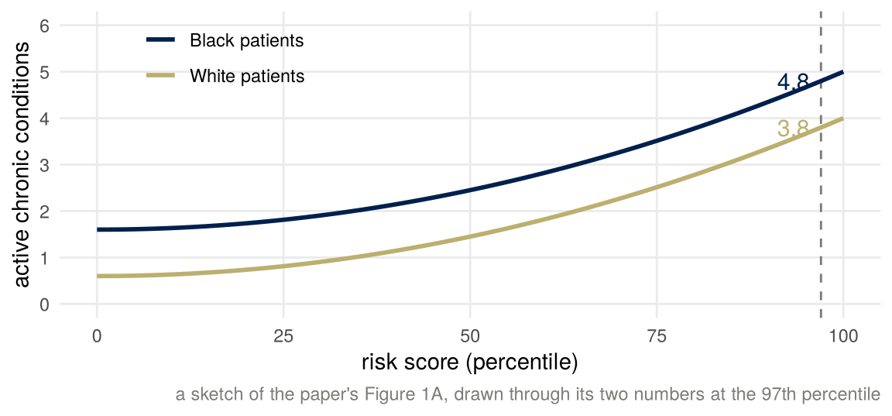
Scores and what they stand for
Important note: this week’s examples include a commercial product and two platforms. Where I say what a company did, the source is the paper or the company’s own statement, linked. Where I say what it should have done, the view is mine, and a well-argued position I think is wrong can still get full marks.
Summary
A score is a number computed about a person and used to decide something about them. The number measures one thing, \(Y\), and is taken to stand for another, \(Y^\star\). The two come apart in three ways: noise, an offset that differs between groups, and a response by the people being measured. A health system’s risk score measured next year’s medical cost and was taken to stand for how ill a patient was; at the same cost, Black patients were sicker, so the score flagged fewer of them for extra care, and the ones it did flag were sicker than the White patients it flagged. In a model with an offset \(b\) for one group, selecting above a threshold \(t\) on the measure is selecting above \(t - b\) on the thing measured, for that group only.
Once a score is rewarded, the people and systems it is applied to act on the score. That changes the equation for \(Y\), an intervention, and what \(Y\) says about \(Y^\star\) afterward is not what it said before. Strategic classification and performative prediction are two formal versions of this. Reinforcement learning says the same thing in other letters: an agent is given a reward \(R\), and the good we care about is a utility \(U\).
Scores
Citation counts
Week 1 followed studies through one filter: of the tests that were run, the ones with \(p < 0.05\) were the ones that reached print. The same filter operates further down the pipeline. De Vries and colleagues (2018) took 105 trials of antidepressants that drug companies had registered with the US Food and Drug Administration, which classified 53 as positive and 52 as negative or questionable, and followed them into the literature.
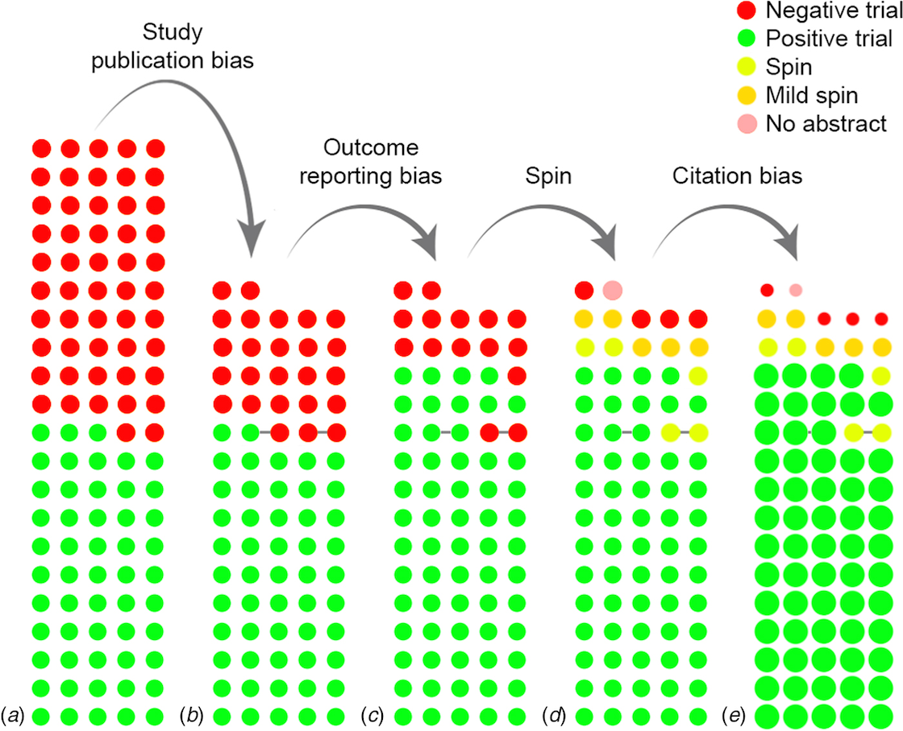
Of the 105 trials, 77 were published: 98% of the positive trials and 48% of the negative ones. Ten negative trials appeared positive in print after an unfavorable outcome was dropped or a secondary outcome promoted to primary. Of the 77 published, 4 said plainly that the drug had not beaten placebo. And in the literature as cited, positive trials were cited about three times as often as negative ones, 92 citations to 32 on average. Each panel is a selection, and each selection runs the same way. The file-drawer effect turns variance into bias.
A citation count is a score. It is what a researcher’s output is measured by, and it is taken to stand for a contribution to knowledge. The figure shows the two coming apart stage by stage: at each stage, more of the positive results survive. The paper documents the selections; it says nothing about anyone’s intentions.
What a score does to the people it is applied to
The citation count also does something to the people it measures. A researcher who knows that positive results are published and cited has a reason to find one, and week 1’s p-hacking loop is a way of finding one. Last week’s lecture put it in one sentence: what a score does to the people who write for it is a different mechanism from selection.
The usual name for this is Goodhart’s law. Charles Goodhart, in a 1975 paper on monetary management in the United Kingdom, wrote that “Any observed statistical regularity will tend to collapse once pressure is placed upon it for control purposes.” The quotation is the one the Wikipedia article you were asked to skim gives, from the paper’s 1981 reprint, page 116; the paper itself was not available to check. The wording most people know is Marilyn Strathern’s, from a 1997 paper on auditing British universities: “When a measure becomes a target, it ceases to be a good measure” (Strathern 1997, p. 308).
Manheim and Garrabrant (2018) sort the ways this happens into four. Their regressional case is the one the next section derives: a proxy that is the goal plus noise overstates the goal wherever the proxy is large. Their adversarial case is the one the section on systems that adapt takes up: once the measure is rewarded, other people, with aims of their own, act on it. In their causal case the regulator’s own intervention on the proxy changes its relation to the goal, and in their extremal case an optimizer pushes the system into a region where the old relation does not hold; both are named here and not developed.
Measured and intended
Write \(Y\) for the outcome a system measures and \(Y^\star\) for the one it was meant to measure: the one we would use if we could. In a regression \(Y\) is the response; in a classifier it is the label; in a reward signal it is the number the agent is given.
| \(Y\), measured | \(Y^\star\), intended |
|---|---|
| citations | contribution to knowledge |
| \(p < 0.05\) | a true effect |
| a job center’s placement rate | people in work because of it |
| a patient’s medical cost | how ill the patient is |
| a video’s views | a viewer informed, or entertained, on their own terms |
The two differ by three routes, and the rest of these notes take them in turn.
- Noise. \(Y = Y^\star + \varepsilon\), with \(\varepsilon\) unrelated to anything else. A noisy measure is still right on average, but a slope on it is flattened toward zero.
- An offset that differs between groups. \(Y = Y^\star + bA\), with \(A\) a group and \(b \ne 0\). The measure is right on average for one group and off by \(b\) for the other, and selecting on it selects the groups differently.
- A response to being measured. Once \(Y\) is rewarded, the people and systems it is applied to act on \(Y\) itself. The equation for \(Y\) changes.
The first lens asks about every row of the table: what are we optimizing or predicting? The answer “cost” or “views” is correct and incomplete. The next question is what the number was taken to stand for, and who decided that it could.
Cost as a proxy for need
A risk score in health care
Obermeyer, Powers, Vogeli and Mullainathan (2019) studied a commercial risk score at a large academic hospital. The score was used to decide which patients were offered extra care. Patients above the 97th percentile of the score were identified for a care-management program automatically; patients above the 55th were flagged to their doctor. Whether an identified patient was then enrolled was a decision for clinicians, so the paper’s numbers are about identification, and these notes say “selected” for it. The score was a prediction of each patient’s medical costs in the coming year, and race was not one of its inputs. By industry estimates, the authors write, tools of this class are applied to roughly 200 million people in the United States each year.
The sample was patients in primary care at the hospital from 2013 to 2015: 6,079 Black patients and 43,539 White patients, counted over 11,929 and 88,080 patient-years. A patient-year is one patient’s data for one calendar year. The authors could see each patient’s score and their health records.
At a given score, Black and White patients cost about the same in the following year, which is what a cost model should deliver. At a given score, Black patients were sicker. The paper’s Figure 1A plots the number of active chronic conditions against the score’s percentile, one curve per group, and the paper reports that at the same score Black patients had more illness. At the 97th percentile, the automatic-enrollment point, Black patients averaged 4.8 active chronic conditions and White patients 3.8, 26% more.
Why? At the same number of chronic conditions, Black patients in the sample generated about $1,801 less in medical costs a year, and everyone in the sample was insured. The authors name two routes. Barriers to care: poverty, geography, transport, the demands of work and child care, and knowing when to seek care, all of which reduce spending at a given level of illness. And the effect of race on the care a patient receives once they are seen; the paper cites a trial (its reference 32) that found higher uptake of recommended preventive care when the doctor was Black. Either way, cost measures need with an offset that depends on race.
The authors simulate what removing the gap would do. The share of Black patients among those identified automatically would rise from 17.7% to 46.5%. Separately, they trained new models on three labels. With total cost as the label, Black patients were 14.1% of the highest-risk group (the 97th percentile and above); with avoidable cost, 21.0%; with the number of active chronic conditions, 26.7%. The label is the choice, and the paper is about what that one choice did.
The paper’s abstract describes the first figure as “the percentage of Black patients receiving additional help,” which is not what was computed; the body gives the Black share of patients auto-identified at the 97th percentile. A paper about a loosely specified target whose abstract loosely specifies its own number is the first lens applied to the paper that teaches it. Read the body.
A model: an offset for one group
Take need \(Y^\star\) to have the same distribution in both groups (an assumption, not a finding: see below), and let \(A = 1\) for one group and \(0\) for the other. The measure is \[ Y = Y^\star + bA , \] and the program selects everyone with \(Y > t\). For group \(0\) that is \(Y^\star > t\). For group \(1\) it is \(Y^\star + b > t\), or \(Y^\star > t - b\). An offset of \(b\) in the measure is a threshold moved by \(-b\) for that group. With \(b < 0\), as in the paper, group \(1\) has to be iller to be selected.
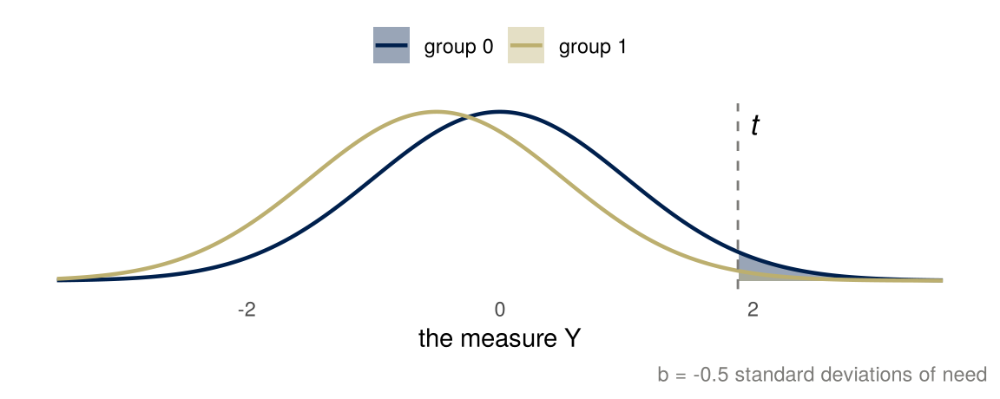
Two things follow, and both are in the paper’s data.
Who is selected. Group \(1\) is selected with probability \(P(Y^\star > t - b)\) and group \(0\) with probability \(P(Y^\star > t)\). With \(Y^\star \sim N(0, 1)\) and \(t\) the 97th percentile, \(t = 1.88\):
| offset \(b\) | selected, group 0 | selected, group 1 | ratio | mean need of selected in group 0 | mean need of selected in group 1 |
|---|---|---|---|---|---|
| 0.0 | 3.0% | 3.0% | 1.00 | 2.27 | 2.27 |
| -0.5 | 3.0% | 0.9% | 0.29 | 2.27 | 2.71 |
| -1.0 | 3.0% | 0.2% | 0.07 | 2.27 | 3.17 |
An offset of half a standard deviation cuts group \(1\)’s chance of selection to less than a third of group \(0\)’s. In percentage points the gap is small, 3.0 against 0.9; at the median the same offset would move the shares from 50% to 31%, a gap of 19 points but a ratio of only 0.62. A threshold in the tail turns a small offset into a large proportional disparity, because the normal density falls quickly there.
How ill the selected are. The mean of a standard normal variable given that it exceeds \(z\) is \[ E[Y^\star \mid Y^\star > z] = \frac{\phi(z)}{1 - \Phi(z)} , \] the inverse Mills ratio from week 1, where it gave the expected size of an estimate that survived the significance filter. Here it gives the mean need of the selected in each group: \(z = t\) for group \(0\) and \(z = t - b\) for group \(1\). Since the ratio increases in \(z\), the selected members of group \(1\) are iller on average than the selected members of group \(0\), by about half a standard deviation in the second row of the table.
The paper’s Figure 1A compares a different quantity: need at a given score, not above a threshold. In this model that comparison is simpler. Two patients with the same measure \(Y = y\) have needs \(y\) and \(y - b\), so at every score group \(1\) is iller by \(-b\), and the gap does not depend on where the threshold is. The table’s comparison, among the selected, adds the tail effect on top: group \(1\)’s selected members are drawn from further out in the need distribution.
This is a bias, and more data does not touch it. A larger sample estimates the offset more precisely and selects the same people.
The model assumes need has the same distribution in both groups. In the paper’s sample it does not (Black patients were on average sicker), which is why the paper’s shares are what they are rather than the table’s; the direction of both effects is the same. The model also assumes the offset is the same for everyone in group \(1\), when in the paper it comes from barriers that vary from person to person. Read the table as a mechanism, not as the hospital’s numbers.
Who bears the error
A threshold makes two kinds of mistake. A patient can be selected without needing the program, which uses a place and the program’s time. A patient can be left out while needing it, which costs the patient. Setting \(t\) at the 97th percentile rather than the 90th trades the two: fewer places used, more people left out. The threshold fixes the trade without saying how it was valued; a budget for places would fix it too.
| selected | not selected | |
|---|---|---|
| ill enough to need the program | right | left out |
| not | a place used | right |
The offset moves the second error onto one group. For a Black patient at the enrollment threshold, the score says “not ill enough” at a level of illness at which it says “selected” for a White patient. The price of an error is paid by the person it falls on, and the offset decides who that is. The fourth lens asks who bears the error; here the answer is the group whose costs were lower at the same need.
Then the standing question. Who benefited from that choice being invisible? The tool predicted cost, and the authors call that choice reasonable, since “the program’s goal, at least in part, is to reduce costs” (Obermeyer and colleagues 2019, “Problem formulation”). Nobody had to decide that cost stood for need; the label did it for them. And would a more competent analyst have chosen differently? The paper’s own answer is yes, in a specific way: the program mostly prevents acute episodes in people with chronic illness, so avoidable cost or the number of chronic conditions would have measured what the program was for, and the authors worked with the manufacturer to change the label.
A noisy measure flattens a slope
The first of the three routes is noise. Let \(Y = Y^\star + \varepsilon\), with \(\varepsilon\) independent of \(Y^\star\), mean zero and variance \(\sigma_\varepsilon^2\). The hospital has the measure and wants need. The best linear guess of need from the measure is the regression of \(Y^\star\) on \(Y\), whose slope is \[ \frac{\operatorname{Cov}(Y^\star, Y)}{\operatorname{Var}(Y)} = \frac{\operatorname{Var}(Y^\star)}{\operatorname{Var}(Y^\star) + \sigma_\varepsilon^2} = \lambda , \] because \(\operatorname{Cov}(Y^\star, \varepsilon) = 0\). The factor \(\lambda\) is between \(0\) and \(1\) and is called the reliability of the measure: the share of its variance that is need rather than noise. When \(Y^\star\) and \(\varepsilon\) are jointly normal with mean zero the regression is the conditional mean, \[ E[Y^\star \mid Y = y] = \lambda y . \]
`geom_smooth()` using formula = 'y ~ x'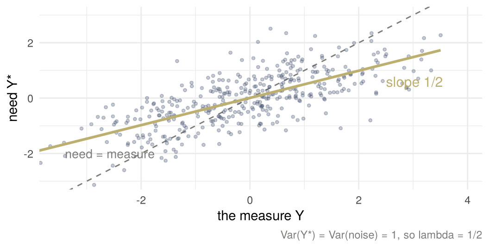
The figure has \(\operatorname{Var}(Y^\star) = \sigma_\varepsilon^2 = 1\), so \(\lambda = 1/2\). A patient whose measure is two units above average is expected to be one unit above average in need (the measure has a larger standard deviation than need, so in each variable’s own standard deviations the shrinkage is by \(\sqrt{\lambda}\)). Selecting the top 3% by the measure selects people whose need is high, but less high than their measure says, by the factor \(\lambda\). Manheim and Garrabrant call this the regressional version of Goodhart’s law: pick the largest values of a proxy and you have picked its noise along with its signal. The slope is attenuated toward zero by \(\lambda\), however large the sample. This is week 2’s sentence again, more data, the same wrong answer, with variance in the measure turned into bias in the slope.
Noise and an omitted variable
The slope above has need on the left. In a regression course the noisy measure is usually on the right, as the predictor, and often something is left out as well. Does care improve health? In this subsection \(Y\) is an outcome, not the measure of need. Let \(Y\) be a person’s health next year, \(X^\star\) the number of times they saw a doctor this year, and \(X = X^\star + \varepsilon\) the number they report, with \(\varepsilon\) independent of everything else. Let \(Z\) be how ill they were this year, which is not in the data, and \[ Y = \beta X^\star + \gamma Z + U , \] with \(U\) independent of \(X^\star\), \(Z\) and \(\varepsilon\). Someone with data on \(X\) and \(Y\) regresses health on reported visits. The population slope is \[ \frac{\operatorname{Cov}(X, Y)}{\operatorname{Var}(X)} = \frac{\beta \operatorname{Var}(X^\star) + \gamma \operatorname{Cov}(X^\star, Z)}{\operatorname{Var}(X^\star) + \sigma_\varepsilon^2} = \lambda\,(\beta + \gamma\delta), \qquad \delta = \frac{\operatorname{Cov}(X^\star, Z)}{\operatorname{Var}(X^\star)} , \] where \(\lambda\) is the reliability of the report and \(\delta\) is the slope of illness on visits. With \(\gamma = 0\) this is \(\beta\lambda\), attenuation alone. With no noise, \(\lambda = 1\), it is last week’s slope with a variable left out, \(\beta + \gamma\delta\), whose bias is \(\gamma\delta\).
The two biases work differently. Noise multiplies the slope by \(\lambda\), which is between 0 and 1: it pulls the slope toward zero and never changes its sign. The left-out variable adds \(\gamma\delta\) to \(\beta\) inside the bracket. Its sign is the sign of the product of the two arrows out of \(Z\), and it can change the sign of the slope. Visits help, \(\beta > 0\). The ill visit more, \(\delta > 0\), and are less healthy next year, \(\gamma < 0\), so \(\gamma\delta < 0\). If \(\gamma\delta < -\beta\), the people who visit more are less healthy next year, the slope is negative, and the data say that care does harm. Noise only shrinks that wrong answer toward zero.
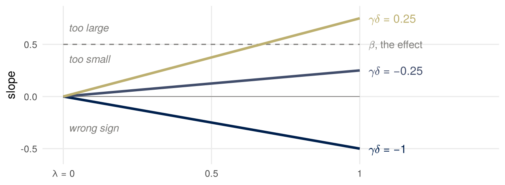
The figure has \(\beta = 1/2\). When \(\gamma\delta > 0\) the two biases pull against each other, and the slope can be too large or too small: it is larger than \(\beta\) when \(\gamma\delta > \beta(1 - \lambda)/\lambda\). The classic case is the return to a year of schooling, with earnings for health, years of schooling for visits and ability left out. Ability is usually taken to raise both schooling and earnings, so \(\gamma\delta > 0\). Card (1999, section 3.3 and the abstract) reviews the evidence: the reliability of self-reported schooling is about 0.9, and studies of identical twins suggest a small upward bias from ability, so the two partly offset.
None of \(\lambda\), \(\gamma\) and \(\delta\) comes from the data on \(X\) and \(Y\). The reliability needs a second report of the same quantity, and the term for the left-out variable needs a measure of it or a design that holds it fixed. From \(X\) and \(Y\) alone you cannot tell whether the slope is too large, too small or of the wrong sign.
This is classical noise, independent of everything else. Noise that is related to the true value, to the outcome or to the left-out variable can move the slope in either direction, and so can noise in a variable that is adjusted for, which leaves part of the confounding it was meant to remove. Noise in the outcome is different again: it goes into \(U\), widens the interval around the slope and leaves its center alone.
Need, resources and care-seeking
The hospital selected on cost and wanted need, and the model so far has cost differ from need by an offset and by noise. Cost also depends on other things about a person. Write \[ Y = Y^\star + W + C + \varepsilon , \] where \(W\) stands for a person’s resources (insurance that pays, income, transport, time off work, a doctor who records every diagnosis), what turns need into care and care into cost, and \(C\) for care-seeking, how readily a person goes to a doctor at a given level of need. The noise \(\varepsilon\) is the rest: an accident, a test that had to be repeated. Suppose the four are independent and normal with mean zero.
The best guess of each part from the measure is the calculation that gave \(\lambda\). For need, \(\operatorname{Cov}(Y^\star, Y) = \operatorname{Var}(Y^\star)\), so \[ E[Y^\star \mid Y = y] = \frac{\operatorname{Var}(Y^\star)}{\operatorname{Var}(Y)}\, y , \] and likewise for \(W\), \(C\) and \(\varepsilon\). The four fractions add up to 1, because \(\operatorname{Var}(Y)\) is the sum of the four variances. Averaging over the people selected, those with \(Y > t\), gives each part’s mean among them: its share of \(\operatorname{Var}(Y)\) times their mean cost, \[ E[Y^\star \mid Y > t] = E\big[E[Y^\star \mid Y] \,\big|\, Y > t\big] = \frac{\operatorname{Var}(Y^\star)}{\operatorname{Var}(Y)}\, E[Y \mid Y > t] . \] With variances 1, 1/2, 1/4 and 1/4, the shares are 1/2, 1/4, 1/8 and 1/8. Of the selected’s mean cost above the population mean, half is need, a quarter resources, an eighth care-seeking and an eighth noise. The selected are a mixture: some are there mostly because they are ill, some because they could turn need into care, some because they seek care readily.
Two more things follow. Among the selected the parts are negatively related, although they are independent in the population: to clear the threshold with less need, a person needed more of something else. And when the parts are related in the population, the mixture changes. If poorer people are sicker, with the spread of need unchanged, the sickest have fewer resources and generate less cost than their need, and the places go less to need: the hospital’s offset again, inside one group.
Some of the parts are more under a person’s control than others. How readily someone seeks care is partly a choice. Illness, income and where someone lives are much less so. The ability to raise a score without raising what it stands for, gaming in the section on systems that adapt below, is often a resource. A program that selects on the score rewards all of these together.
Reinforcement learning
Notation: this section uses the letters of reinforcement learning: \(S\) state, \(A\) action, \(R\) reward, \(\pi\) policy, \(U\) utility.
An agent observes a state \(S\), takes an action \(A\), and receives a reward \(R\). A policy \(\pi\) is a rule that chooses the action from the state, \(A = \pi(S)\), and learning means changing the policy to make the expected reward, \(E_\pi[R]\), large, where \(E_\pi\) is the expectation when the agent acts by \(\pi\). The utility \(U\) is what we care about. A utilitarian would choose the policy whose expected utility \(E_\pi[U]\) is largest. The agent is given \(R\) instead, because \(R\) can be measured and \(U\) often cannot: in the job center below, \(U\) needs what would have happened without the course. \(R\) and \(U\) can come apart. In the letters of the rest of these notes, \(R\) is \(Y\) and \(U\) is \(Y^\star\).
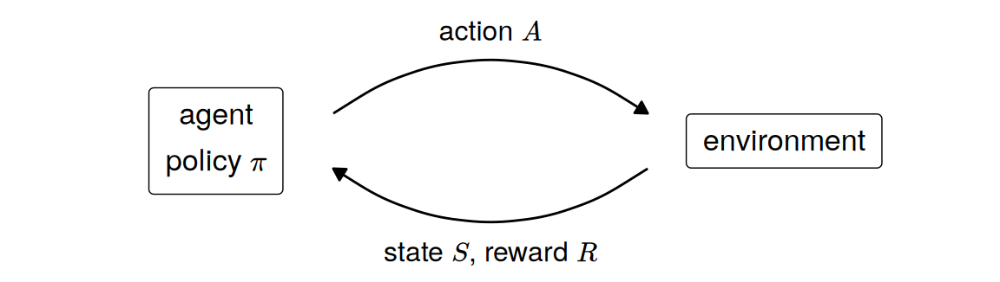
Amodei and colleagues (2016) use a cleaning robot as a running example. In these letters, the state is what the robot’s camera shows, the actions are where to move and whether to clean, and the utility is a clean room. If the reward is for not seeing any mess, the robot can earn it by closing its eyes, or by covering the mess with something it cannot see through.
Warning in geom_rect(data = room, aes(xmin = 0, xmax = 10, ymin = 0, ymax = 8), : All aesthetics have length 1, but the data has 3 rows.
i Please consider using `annotate()` or provide this layer with data containing
a single row.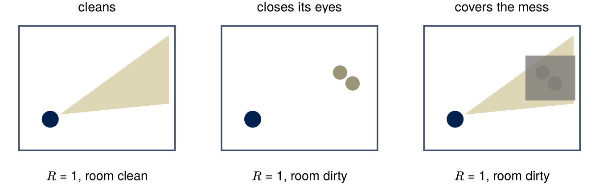
Now a variant of week 3’s job center, with 100 places on the course, which helps some people more than others. Take the rates that follow as what would happen under assignment to the course or to no course, so that the differences are effects and not last week’s confounded comparison. Of people who worked last year, 70% are in work six months later if they take the course and 64% if they do not; of people who did not work last year, 40% and 14%. The state is a person’s record, the action is to refer or not, and the center is judged on the share of the people it refers who are in work, its placement rate. That rate is its reward. Referring 100 people who worked last year earns a rate of 70% and puts 6 more people in work, on average, than would be in work without the course. Referring 100 who did not earns 40% and puts 26 more in work. A center judged on its placement rate refers the first group; a utilitarian counting the jobs the course creates refers the second, and so serves the people who need the course most.
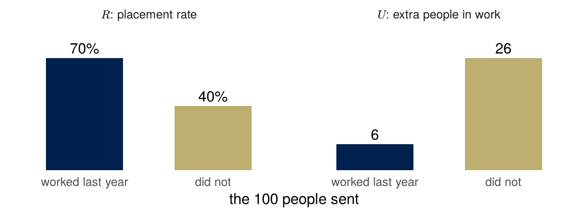
Choosing people who would have done well anyway is called cream skimming. Heckman, Heinrich and Smith (2002) studied it in US job-training centers funded under the Job Training Partnership Act, which were judged partly on employment rates. They found the short-run measures “weakly, and sometimes perversely, related to long run impacts.” They also found that cream skimming made little difference to the programs’ efficiency, in either direction, unlike the invented numbers above, and concluded: “Opposition to cream skimming must come on equity grounds.” Equity here is about who is served; efficiency is about the total.
The job center chose between two utilities, and the hospital faces the same choice. Its program, the paper says, mostly prevents acute episodes in people with chronic illness. One candidate for \(U\) is how ill a patient is; another is how much the extra care would help them. They pick out different people whenever the care helps some patients more than others, which is the heterogeneity last week’s average treatment effect averaged over. Telling the two apart needs an estimate of the program’s effect on each kind of patient, a causal claim that the hospital’s data, on patients it chose to enroll, do not give by themselves. Choosing between them is not an estimate at all: it is a judgment about whose good the program is for, and no label makes it for you.
Each of the four difficulties of utilitarianism from week 3 becomes a choice someone makes in building such an agent. Defining utility becomes choosing \(R\), a measurable stand-in for \(U\), and in both examples the two come apart. Trading off between people becomes adding the reward up over the people the agent serves; the placement rate counts only the people referred. Judging acts or rules becomes choosing a policy, a rule that treats alike everyone in the same state. Judging each action on its own and judging the rule can give different answers: when a rule has to treat different situations alike, as a model that sees only a few variables about each person does; when places are limited, so that one referral uses a place another person could have had; and when people respond to the rule itself. Predicting consequences becomes choosing a model of what the actions do, which is a causal model.
Is \(E_\pi[U]\) a causal quantity? It can be read as one, the expected utility if the agent’s actions were set by \(\pi\), but that reading needs assumptions beyond last week’s. An intervention in last week’s sense sets a variable for everyone in a population. Here one agent follows a rule. The people and systems it acts on may respond to what it does, sometimes adversarially, and what happens to one of them can depend on what was done to others. Causal reinforcement learning, a subfield surveyed by Deng, Jiang, Long and Zhang (2023), brings causal models into reinforcement learning.
These letters clash with the ones used for prediction, which most of the course uses.
| prediction | reinforcement learning | |
|---|---|---|
| \(A\) | sensitive attribute: something a person is | action: something an agent does |
| \(R\) | risk score, with \(\hat Y = 1\{R \ge t\}\) | reward |
| \(U\) | unobserved variable | utility |
| \(S\), \(\pi\) | not used | state, policy |
If you read about reinforcement learning you will meet these letters with these meanings. New letters invented for this course would teach a convention nobody else uses. Two rules are enough. Material that uses the reinforcement-learning letters says so in one line at the top, as this section does. And the two sets of letters are never mixed inside one diagram or one derivation. A classifier described as an agent takes its prediction \(\hat Y\) as its action, which reinforcement learning would write as \(A\). Mixing the two there would give \(A\) two meanings in one line.
Systems that adapt
When a measure becomes a target
So far the people being measured have done nothing. Now reward the measure. Before the rule, \[ Y = Y^\star + \varepsilon , \] and selecting the people with the highest \(Y\) is conditioning: it picks out a group whose need is high, shrunk by \(\lambda\), because the old relation between \(Y\) and \(Y^\star\) still holds among the people picked. After the rule, each person can add an amount \(g \ge 0\) to their own \(Y\), at some cost, without changing \(Y^\star\): \[ Y = Y^\star + \varepsilon + g . \]
Warning: The `label.size` argument of `geom_label()` is deprecated as of ggplot2 3.5.0.
i Please use the `linewidth` argument instead.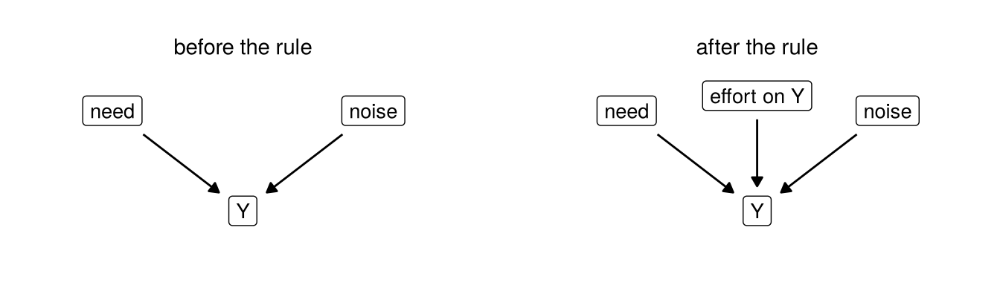
Replacing the equation that generates \(Y\) is what week 3 called an intervention: a new assignment for one variable, every other line left alone. The relation between \(Y\) and \(Y^\star\) that held before the rule need not hold after it. Which people it fails for depends on who can pay for \(g\).
Who can respond decides what the response does. Compare two cases with the same 300 places for the highest \(Y\). If everyone adds the same \(1\) to their \(Y\), every ranking is unchanged, the same 300 people are selected, and nothing about them has changed: a rewarded measure is not spoiled by the reward alone. If half of the people are able to add \(1\) and the rest cannot, the ranking changes, and it changes toward the people who could respond. The simulation below has ten thousand people, need and noise standard normal, and who is able to add \(1\) unrelated to need. Each panel plots the measure against need, with the cutoff for 300 places dashed and the 300 selected drawn solid. The first two panels are the same picture shifted up by one: the same people are selected. In the third the 300 places go mostly to people who were able to add \(1\), and the selected reach further down in need.
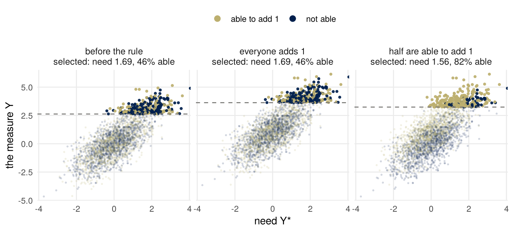
The fall in mean need in the third case is modest, because the people able to add \(1\) were drawn from the same need distribution as everyone else; what changes most is who the places go to. The first two cases select the same people, which is the check that it is the difference in response, not the response itself, that moves the allocation. In the paper’s setting the equivalent would be a hospital that rewards patients, or their doctors, for a high score, after which the score measures who responded to the reward.
mean_y mean_need
3.173319 1.686755 Two formal versions of a system that adapts are in the reading’s authors’ own work.
Strategic classification (Hardt, Megiddo, Papadimitriou and Wootters 2016). A classifier is published. Each person then changes their features, at a cost that depends on the change, to get the label they want. The classifier is scored on the features as changed, against each person’s true label, which is fixed by the features as they were before the change; so every response is gaming, and the design problem is a classifier that stays accurate when everyone games it. The paper gives efficient algorithms for a natural class of cost functions and shows the general problem is hard.
Performative prediction (Perdomo, Zrnic, Mendler-Dünner and Hardt 2020). A prediction that is acted on can change the thing it predicts: a traffic forecast changes which roads people take, and a forecast that a loan will default can make it default. The authors call such predictions performative. The distribution the model is evaluated on depends on the model deployed, by whatever mechanism, and the labels can move along with the features. The question is what retraining on the data a model induces converges to, a model they call performatively stable, and whether that point has low loss. They give conditions under which it does, and show that strategic classification is the special case in which the mechanism is individuals responding to a published rule.
Gaming and improvement. Miller, Milli and Hardt (2020) separate responses to a rule that game it from responses that improve what it stands for, and show that designing a rule that rewards improvement “must inevitably solve a non-trivial causal inference problem.” The example here is ours. Take a course judged by its students’ test scores. Practicing raises skill, and skill raises the score; memorizing old papers raises the score without touching skill. Each graph is a claim someone could dispute.
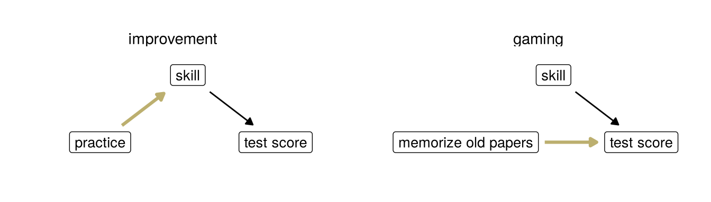
Whether a response to a rule is gaming or improvement depends on the causal model. If the feature a person changes raises the outcome, the change is improvement, and \(Y^\star\) rises with \(Y\); if it changes only the measure, the change is gaming, as in the second graph. The graph says which features can affect the outcome at all; whether a given change raises it, and by how much, needs the model’s equations too. A rule meant to reward improvement has to know which, and that is a causal inference problem; the authors show that any procedure for designing such rules has to solve one. Conditioning is not intervening, a third time: the rule intervenes on the people it is applied to, and what they do in response is decided by the graph, not by the rule’s intentions.
Engagement
Notation: this section uses the letters of reinforcement learning: \(S\) state, \(A\) action, \(R\) reward, \(\pi\) policy, \(U\) utility.
A recommender system is an agent. Its state is what it knows about a user, its action is what to show next, and its reward is whatever the platform can measure about the response: a click, a view, time watched, a share. In August 2012 YouTube told its creators that its discovery features had been “designed to drive views,” which rewarded videos that got clicked over videos that kept viewers watching, and that it would rank by watch time instead. A platform’s reward is engagement in some form. A user’s utility is something else: being informed, or entertained, on their own terms, and not manipulated. The two need not conflict: a change that keeps viewers watching can serve them too. Where they do conflict, where raising \(U\) would lower \(R\), a platform whose revenue rises with \(R\) has a reason not to, and nobody inside has to decide to leave the gap open; the reward decides for them. The post describes one change of reward, not the incentives behind it; that reading is mine. Last week’s lens asked which comparison gets reported; this week’s asks what is being optimized, and for whom.
Week 2 showed the selection half of this story: a feed surfaces the most extreme of \(n\) items. This is the optimization half: a feed that ranks by \(R\) changes what gets made, because the people who make it write for the score.
Lenses
What are we optimizing or predicting? Cost, standing in for need. Citations, standing in for a contribution. A placement rate, standing in for jobs created. Views, or watch time, standing in for a viewer’s good. In each case the first word is what the system can measure and the second is what someone wanted; the system’s designer chose the first and the system optimized it.
Who bears the error? A threshold at the 97th percentile makes two errors, a place used on someone who did not need it and a person left out who did, and trades them against each other, whether by a judgment about their costs or by how many places the program has. An offset in the measure moves the second error onto one group, the one whose costs were lower at the same need. The cleaning robot’s owner bears the difference between the robot’s reward and a clean room; the job seekers a center did not refer bear the difference between its placement rate and the jobs the course would have created.
What can be changed, and how? What things are considered “controlled for” or “held fixed,” and is that realistic? This lens is new this week, and it is last week’s method put as a question. Benefit is an effect: it compares the same patient with the extra care and without it, holding the patient fixed. A slope of health on reported visits is read as the effect of a visit with illness held fixed; illness is not in the data, so nothing held it fixed. The lens also asks what the people scored can change: how readily they seek care is easier for them to change than how ill they are. Goodhart’s law is the case where something was assumed to stay fixed and did not: a rule rewarding the score assumed that the relation between the score and need would hold, and the people scored changed it. Strategic classification holds the true label fixed while people change their features; performative prediction drops that assumption and lets the whole distribution move.
And why? A measure is chosen because it can be measured. Cost is in the billing system and need is not. Views are counted and a viewer’s understanding is not. The choice is made once, often by a vendor, and afterward nobody has to make it again; the score makes it for them.
For the class
Exercises, problems and simulation
The exercises, done on students’ own time, compute who is selected under an offset at a new threshold and with a fixed number of places, derive \(\lambda\) from the covariance algebra above, then the slope \(\lambda(\beta + \gamma\delta)\) with numbers that make it too large, too small and of the wrong sign, and simulate it. In class, problem 1 draws the graph of need, resources and care-seeking with selection on cost and computes each part’s mean among the selected, and the class simulates the selection, with gaming that depends on resources. Problem 2 changes the label to the number of active chronic conditions and asks what reaches it and what happens once it is paid on.
Readings
Required
- Obermeyer, Powers, Vogeli and Mullainathan, Dissecting racial bias in an algorithm used to manage the health of populations (Science 366(6464), 2019, 447–453, https://doi.org/10.1126/science.aax2342): the abstract and the sections “Health disparities conditional on risk score,” “Mechanism of bias” and “Problem formulation” (pages 448 to 451, with Figure 1).
- Barocas, Hardt and Narayanan, Fairness and Machine Learning: Limitations and Opportunities (MIT Press, 2023), chapter 1, Introduction, from “The trouble with measurement” through “Feedback and feedback loops” (pages 7 to 14).
- Skim the Wikipedia article Goodhart’s law (the revision of 9 October 2026 was the one checked).
Optional
- Amodei, Olah, Steinhardt, Christiano, Schulman and Mané, Concrete Problems in AI Safety (2016), sections 2 and 4.
- Meyerson, Eric, YouTube now: why we focus on watch time (YouTube Official Blog, 10 August 2012).
- Miller, Milli and Hardt, Strategic Classification is Causal Modeling in Disguise (ICML 2020, PMLR 119, 6917–6926), section 1.
- Perdomo, Zrnic, Mendler-Dünner and Hardt, Performative Prediction (ICML 2020, PMLR 119, 7599–7609), section 1.
- Jacobs and Wallach, Measurement and Fairness (ACM FAccT 2021, 375–385, https://doi.org/10.1145/3442188.3445901).
- Manheim and Garrabrant, Categorizing Variants of Goodhart’s Law (2018).
Cited in the text and not assigned: de Vries, Roest, de Jonge, Cuijpers, Munafò and Bastiaansen, “The cumulative effect of reporting and citation biases on the apparent efficacy of treatments: the case of depression” (Psychological Medicine 48(15), 2018, 2453–2455, https://doi.org/10.1017/S0033291718001873, CC BY 4.0); Goodhart, “Problems of Monetary Management: The UK Experience” (Papers in Monetary Economics 1, Reserve Bank of Australia, 1975; reprinted in A. S. Courakis, ed., Inflation, Depression, and Economic Policy in the West, Barnes and Noble, 1981, from page 111; not checked, quoted as the Wikipedia revision above gives it); Strathern, “‘Improving ratings’: audit in the British University system” (European Review 5(3), 1997, 305–321, https://doi.org/10.1002/(SICI)1234-981X(199707)5:3%3C305::AID-EURO184%3E3.0.CO;2-4); Heckman, Heinrich and Smith, “The Performance of Performance Standards” (NBER Working Paper 9002, 2002, https://doi.org/10.3386/w9002); Deng, Jiang, Long and Zhang, “Causal Reinforcement Learning: A Survey” (Transactions on Machine Learning Research, 2023, https://openreview.net/forum?id=qqnttX9LPo); Hardt, Megiddo, Papadimitriou and Wootters, “Strategic Classification” (Proceedings of the 2016 ACM Conference on Innovations in Theoretical Computer Science, 111–122, https://doi.org/10.1145/2840728.2840730); Card, “The causal effect of education on earnings” (in O. Ashenfelter and D. Card, eds., Handbook of Labor Economics 3A, Elsevier, 1999, 1801–1863, https://doi.org/10.1016/S1573-4463(99)03011-4); Obermeyer and colleagues’ reference 32 is the trial cited above.